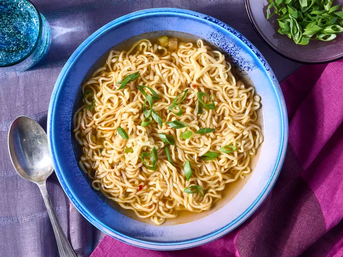

We will be looking at recipes for several foods here.
Japanese Ramen Noodles, an easy and delicous snack for lovers of noodles.

Ukrainian Borscht, a fun to make and delicious soup.
Korean Kimchi, a great healthy and delicous way to learn about fermenting.
All recepies and images are from